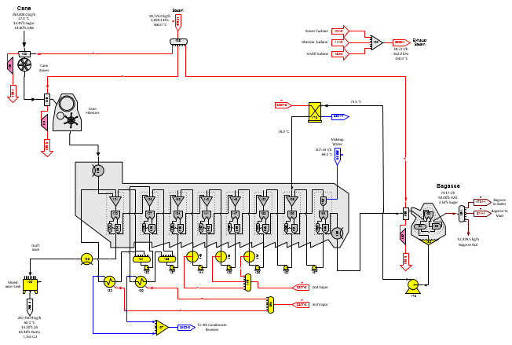
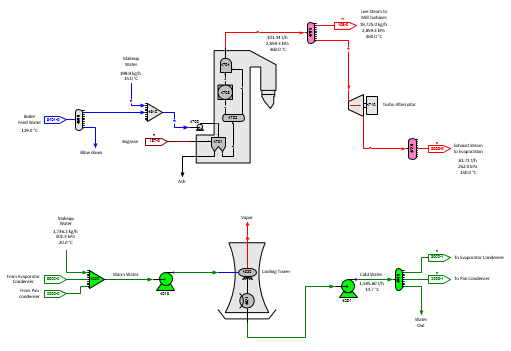

Diffusion
The model of a cane factory with a diffuser is the same as the milling factory except for the first page. The above figure shows the first page (Diffusion page) with a diffuser. Cane preparation is done by one set of knives and a fiberizer - both of which are driven by steam turbines. Bagasse after the diffuser is dewatered in a steam driven mill. A separator station controls the quantity of steam to the knife and fiberizer as a ratio to the quantity of the total cane flow. The ratio could be set to the fiber in the cane as an alternative method for controlling the steam quantity.
The diffuser is modeled using cells/stages that consist of a receiver, separator, distributor and blender stations in an arrangement that allows for fiber to move through the diffuser with decreasing amounts of sucrose and non-sucrose components. Seven identical combinations are used so that injection steam and recirculation juice flow streams are modeled like the actual diffuser. The results of the model can be adjusted in the separator and blender stations to give the same operating results as measured in the factory. Because the separation of sucrose and non-sugars from fiber can be controlled in each of the cells, it is not necessary to have as many cells to achieve the same performance in the model as in the actual diffuser in the factory; however, a diffuser model could be constructed to have the same number of cells as the actual diffuser.
Draft for the diffuser is controlled by blender station no. 161 which ratios the quantity of makeup water to the fiber content of the flow into the blender. Changing the ratio will quickly change the draft on the diffuser, sucrose extraction and mixed juice characteristics.

Steam/Water
The figure above shows the Steam/Water page for the boiler, turbo alternator and cooling water loop with cooling tower. The boiler grouping is a simple model for the boiler that uses a separator station (no. 4701) to ratio the fuel to the boiler feed water. The reactor station no. 4703 is used to convert feed water to steam. The efficiency of the conversion is 100% (all of the feed water is converted to steam) and the heat of reaction is set to give a temperature for the steam leaving the reactor that is higher than the live steam out of the boiler. A blender station (no. 4704) is used to control the temperature of the live steam by using feed water to reduce the steam temperature to the actual live steam temperature. The pressure of the live steam is set in the boiler feed water pump. Other boiler groupings are available on the Equipment stencil that can provide automatic adjustment of the fuel depending on the moisture content of the fuel.
The cooling tower is modeled using a flash tank (station no. 4020) and a cooler (station no. 4021) to give cooling water at the correct temperature for the pan and evaporator condensers. Excess water from the cooling loop is discharged from distributor station no. 4040.